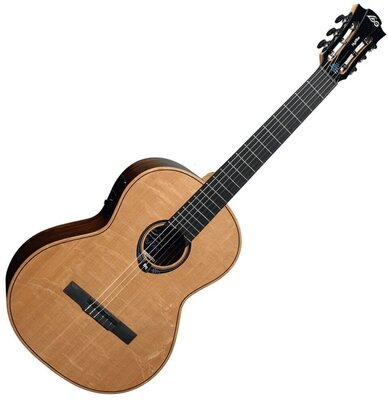
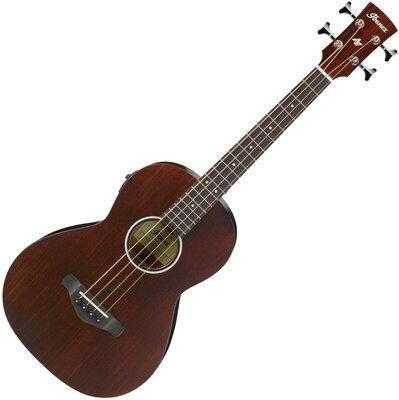
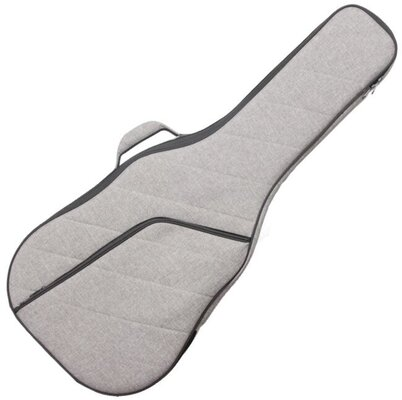

Kytary Tsillyk
Volba nejnáročnějších muzikantů
Za vznikem značky Tsillyk stála naše touha vyrábět špičkové nástroje pro nejnáročnější muzikanty. K výrobě každé kytary proto přistupujeme s láskou, péčí a precizností. Naše kytary vyrábíme z materiálů nejvyšší kvality získávaných s respektem k životnímu prostředí. Tyto materiály v kombinaci s unikátními výrobními procesy a precizním zpracováním dodávají kytarám Tsillyk výjimečný zvuk nejvyšší kvality, který se snažíme i nadále rozvíjet. To je hlavní úkol našich výzkumných aktivit, v jejichž rámci prolamujeme současné hranice kytarového průmyslu a vyvíjíme nové technologie i výrobní procesy posouvající naše kytary stále blíže k dokonalosti. A právě touha po dokonalosti je tím, co nás pohání vpřed jako stavitele kytar i samotné hráče. Je to hledání, které nemá konce. Je to naše posedlost.
Naše Produkce
 Akusticka Kytara
Akusticka Kytara

Klasicka Kytara

Akusticka Bass Kytara

Kufry